OEM 应用：只有数据，缺乏引导
虽然可以获取实时车辆数据，但大多以仪表盘形式呈现。它们只告诉用户“发生了什么”，却没有回答“接下来该做什么”。
Smart Integrated Monitoring Ownership Network
SIMON 是一款面向未来汽车拥有场景的嵌入式 AI 助手。它整合车辆状态、维护与故障信息、保险及行政事务，并提供清晰的行动建议与完整用车记录，帮助用户更简单地理解、管理和维护自己的车辆。
SIMON 围绕以下4 大核心领域，提供贯穿整个汽车拥有周期的支持
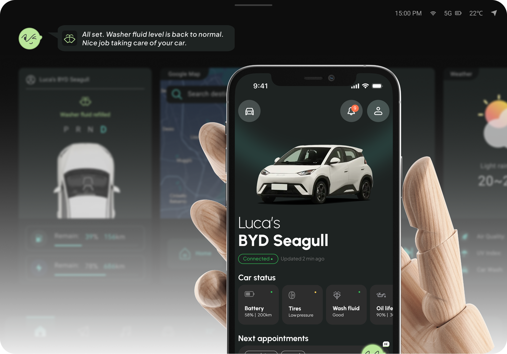
本项目采用“策略研究 + 设计思考”的流程推进：通过案头研究、竞品分析与用户访谈提炼关键洞察，进而明确问题定义与概念方向；在此基础上，发展交互流程与跨设备原型（移动端与车载/CarPlay），并构建最小可行产品（MVP）。最终，通过基于情境的用户测试（思维大声表达法 + SUS量表）进行验证，并不断迭代完善形成最终方案。
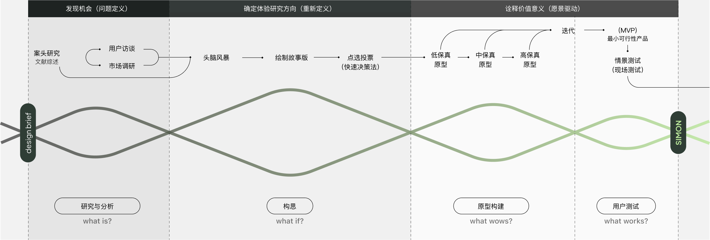
现有的用车支持体系仍处于碎片化且不完整的状态。市场分析表明，现有解决方案主要集中在2种典型但不足的路径：
虽然可以获取实时车辆数据，但大多以仪表盘形式呈现。它们只告诉用户“发生了什么”，却没有回答“接下来该做什么”。
各类专业化应用和服务能够解决单一问题，但彼此割裂，导致使用过程中的摩擦、不确定性，以及较高的认知负担。
这一鸿沟定义了 SIMON 的使命：
通过将碎片化的数据与服务转化为清晰、连续且以人为本的用车支持，从而增强车主与车辆之间的连接。
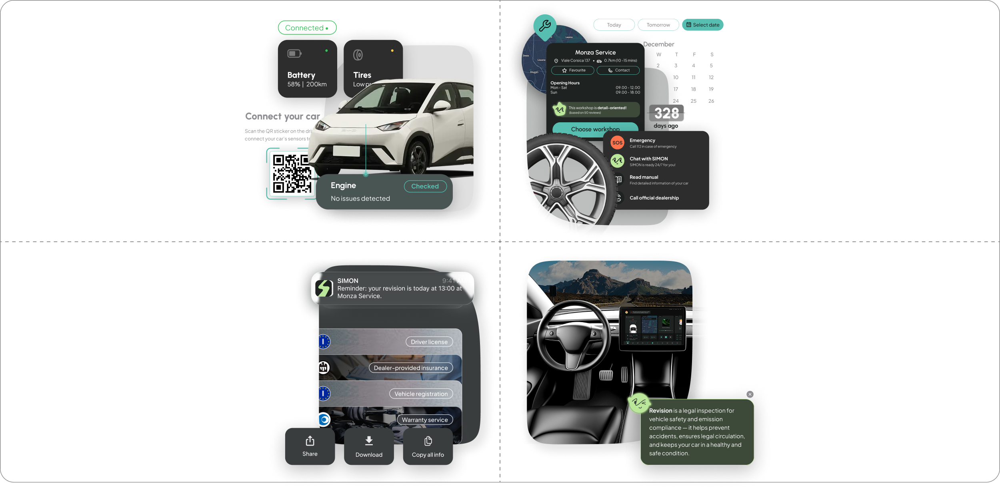
接入车辆传感器，实现实时诊断与状态监测
无缝对接维修点、保险及紧急救援等服务
集中处理预约、文档与提醒等事务
将复杂的数据转化为清晰、可执行的行动建议
SIMON 是一个互联的汽车服务生态系统，整合车辆数据、服务合作伙伴与多端触点，在完整的用车旅程中持续为用户提供清晰、可执行的下一步行动支持。
连接保险、维修、汽车制造商、经销商和行政机构，为不同用车问题匹配对应服务
整合车辆信息与服务资源，完成状态解读、行动建议、记录管理与问题处理
结合车辆数据与用户行为，通过手机、CarPlay 和车机持续提供信息与操作支持。
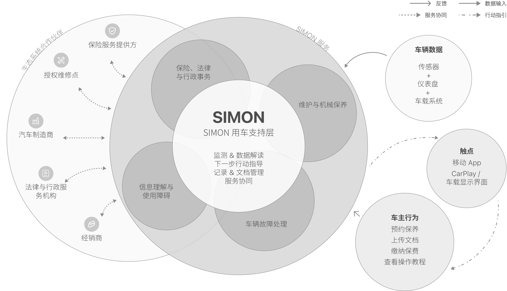
SIMON 是一个互联的汽车服务生态系统，整合车辆数据、服务合作伙伴与多端触点，在完整的用车旅程中持续为用户提供清晰、可执行的下一步行动支持。
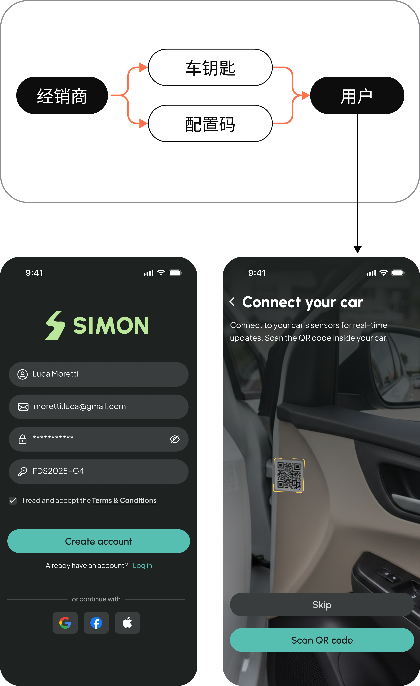
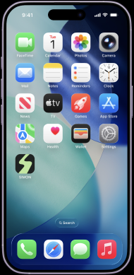
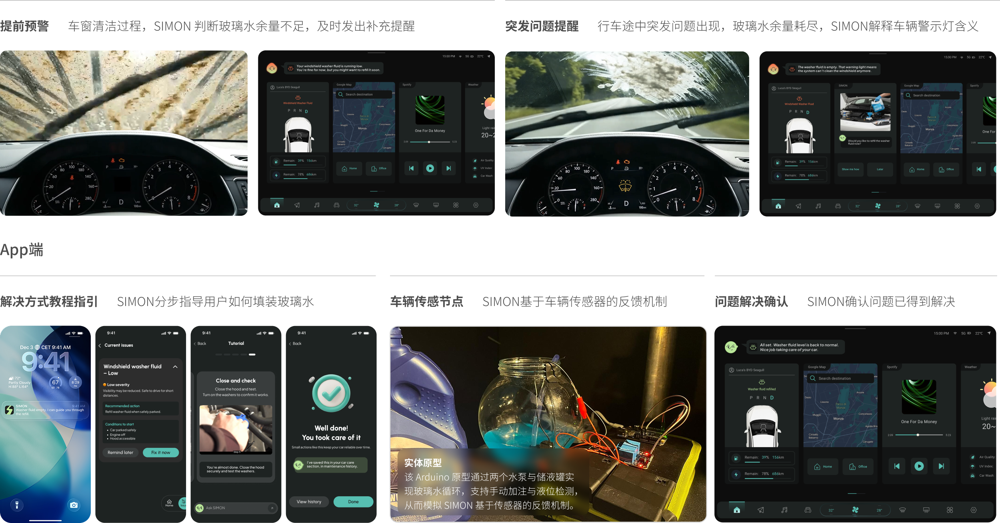
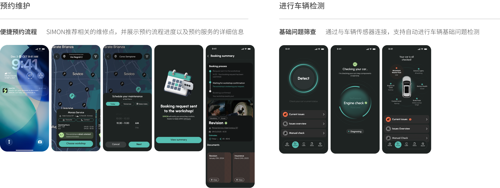
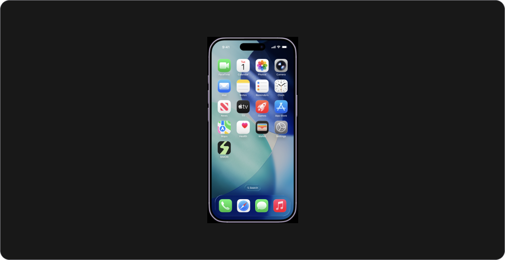
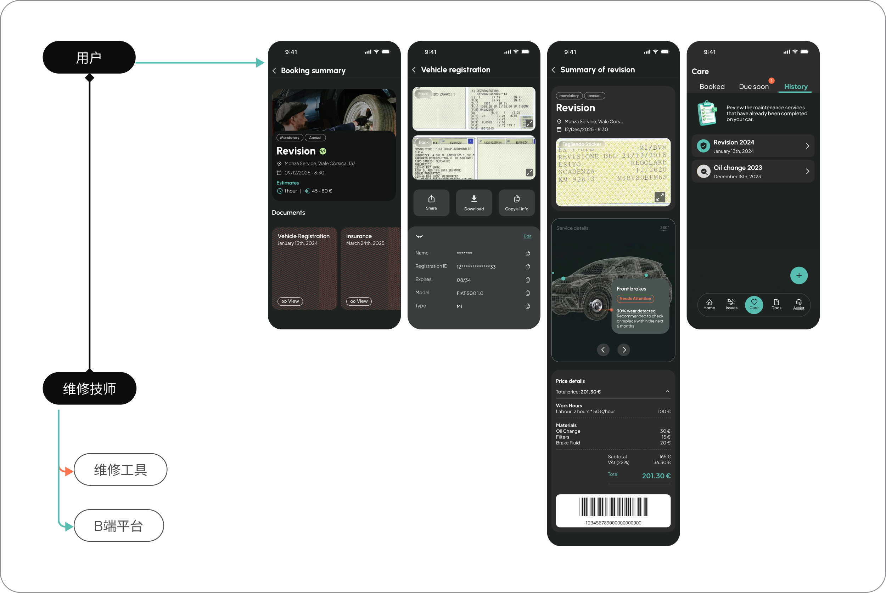
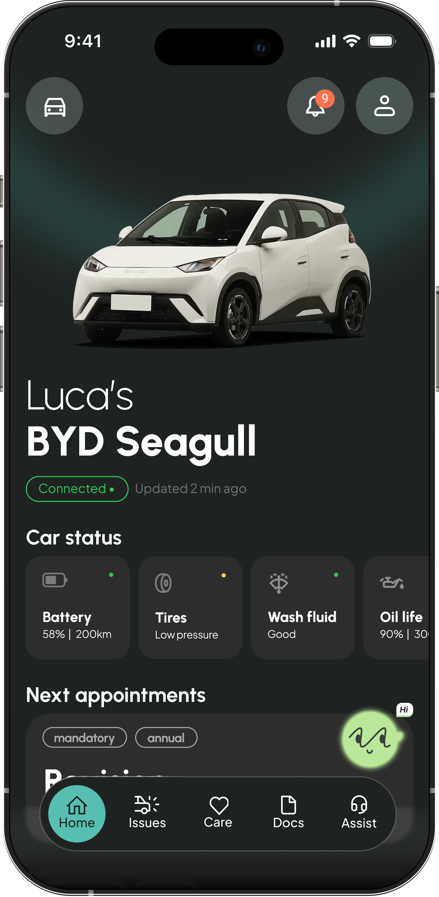
首页以车辆为核心建立清晰的信息层级，将实时车况、异常状态与近期服务按优先级集中呈现，并通过卡片化与渐进式信息展开降低认知负担。SIMON 作为轻量入口嵌入其中，在不打断浏览的前提下衔接后续解释与行动。
通过分步说明与视频引导，将不确定性转化为清晰可执行的行动。并支持及时针对具体问题询问SIMON获取具体信息。
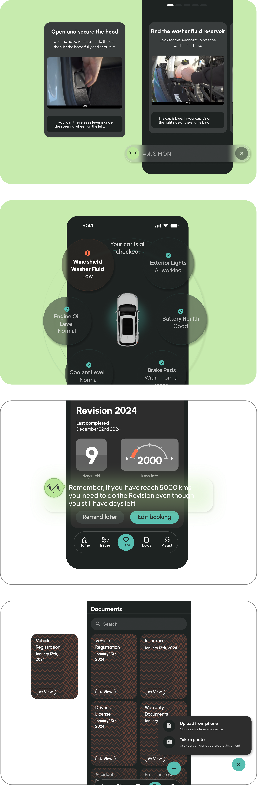
App端与车辆传感器互联实现数据相互传输。将车辆实时信号转化为易于理解的状态信息与预警提示，及时排查基础故障。
基于车辆状态与使用的情境，SIMON 将提示嵌入关键交互节点，以适配场景的形式提供解释与行动引导。
集中管理车辆相关文件与服务记录，并支持个人主动上传，便于快速查阅与合规管理。
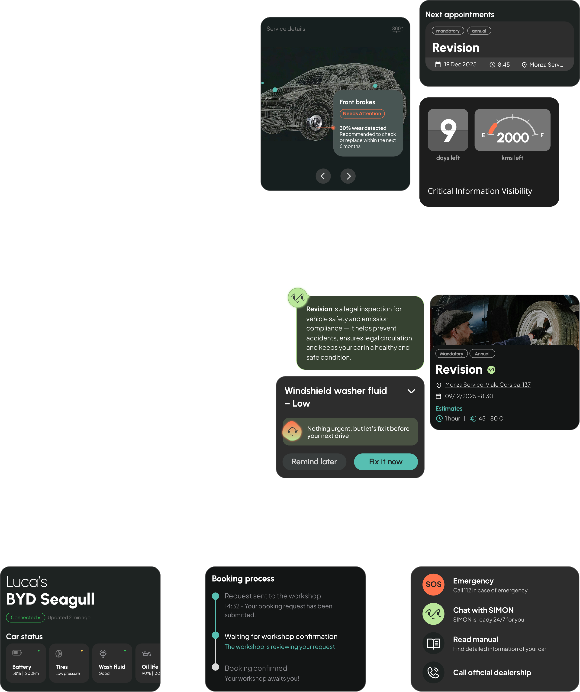
车辆异常、服务预约与关键事项按优先级集中呈现，并通过清晰的信息层级强化视觉焦点，帮助用户快速识别当前最需要关注的内容。
SIMON 根据不同情境以适合的形式嵌入流程，在术语解释、异常提醒与关键决策节点提供即时说明与明确的下一步行动建议。
核心车辆部件状态持续呈现在首页，并通过差异化颜色反馈状态变化，使异常与风险能够被快速识别。
维修、预约与检修等服务过程以时间线呈现，明确当前进度、关键节点与后续步骤，让整个流程持续可追踪。
SOS 与关键安全信息保持高可见、易触达的常驻入口，并集中覆盖必要的应急信息与操作，确保紧急情况下能够快速响应。
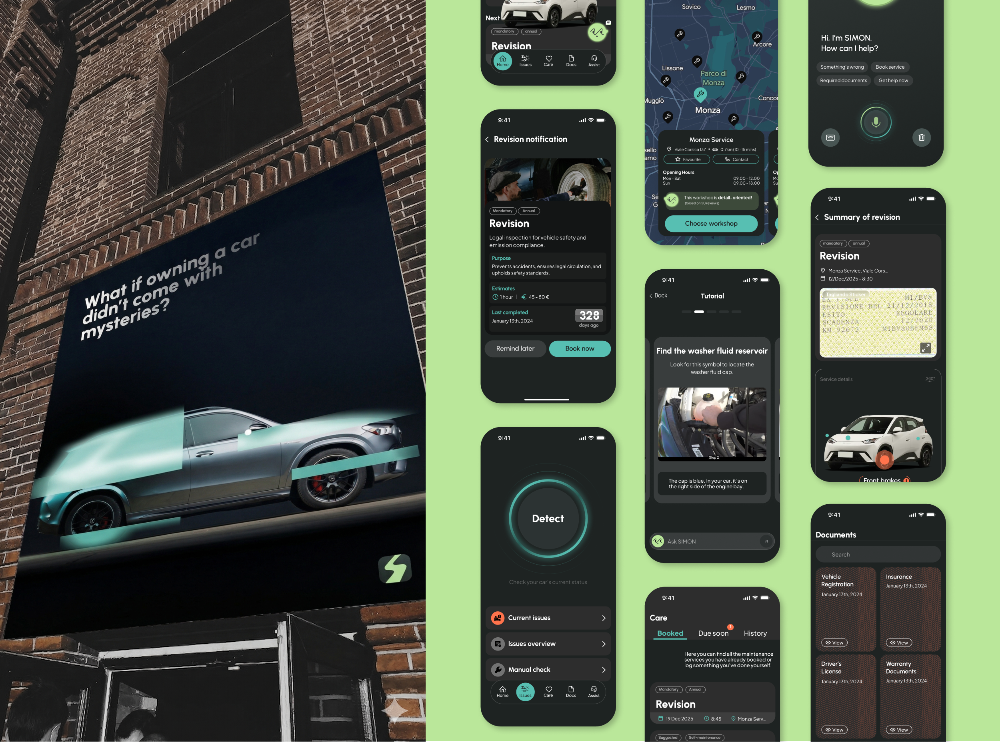
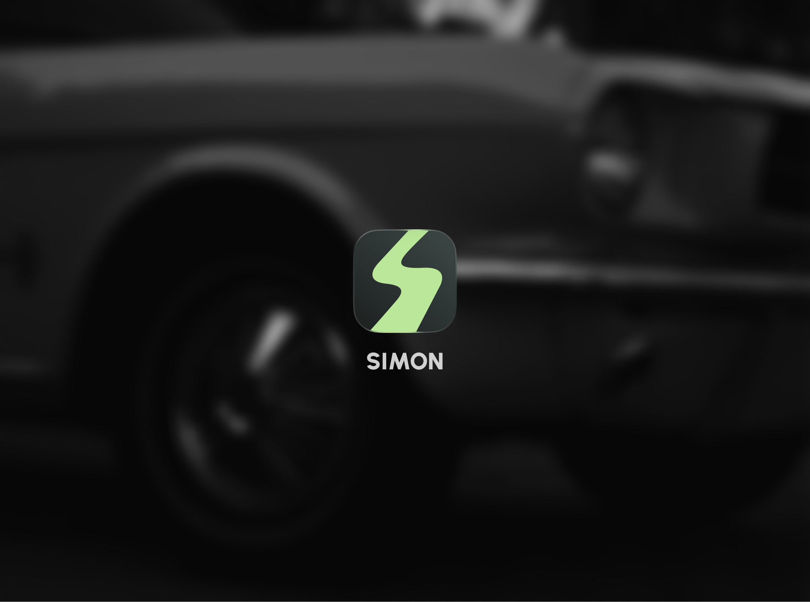